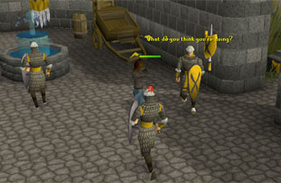

Thieving - The Basics
Introduction
It�s easy enough to get started, but fairly hard to stop. Once you begin mastering this skill you will find new opportunities become open to you. Locked doors become nothing more than a minor inconvenience, chests spring open welcomingly at your touch, while you will also discover an uncanny gift for �acquiring� those things around you that your heart desires but your purse cannot afford.
Pickpocketing
To begin Thieving all you need is you! At level one, simply head to an area in the game where you can find a man or woman (Falador or Lumbridge, for example).
If you right-click on your selected person, you will be presented with a submenu of which the option 'Pickpocket' is available.

To see a full list of who you can pickpocket from and what level you will require, please refer to the Thieving - Pickpocketing table.
Stealing from stalls

To steal from a stall, right click the stall you wish to steal from and on the submenu, select 'Steal from..'
As with pickpocketing, you can be successful and receive your loot, or you can be unsuccessful and attract the attention of nearby guards:
It is worth noting that if you wish to continually loot stalls, then positioning has to be considered. If you are within sight of the owner, they will call for help and you will be unable to steal. Similarly, if you are standing in such a position where the guards are not near, then you save yourself from being attacked.
To see a full list of stalls you can steal from and what level you will require, please refer to the Thieving - Stalls table.
More Thieving
On top of Thieving from stalls and people in RuneScape, you can even try picking locks to gain access to chests. Beware, though: some are trapped - make sure you right-click and 'search for traps' where necessary.
Doors - Picking locks
To pick locks, simply find a door that is locked, and from the submenu select 'Pick lock'. Note, some locks will require a lock pick to gain access. Using a lock pick on any door will greatly increase the chance of opening it. Lock picks are obtainable by stealing from rogues in the Wilderness, or buying them from the Rogues' Den shop.
Thieving from chests
Around the RuneScape world, there are certain chests in which treasure is stored. If you are lucky enough to find one, you can use your Thieving skill to crack it open and take the reward. Just remember that you will not always be successful when using your Thieving skill.
To see a full list of what chests you can steal from and what level you will require, please refer to the Thieving - Chests page.
Advanced thieving
Thieving can be trained in more ways than just those listed here. Aside from receiving Thieving experience from quests, there are many more listed in Thieving - Extra Features.
Click here to view the Thieving FAQs

More articles in
Thieving
|
|
|
Further Help
Need more help? Come chat with us!
|
|